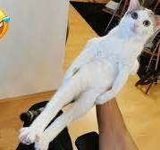
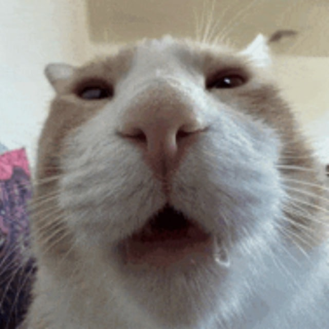
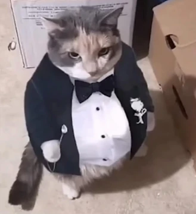

Реестр смешнявых котоф
О сайте
Сайт "Реестр смешнявых котоф" сделан для изучения web-технологии, языка HTML и просто для приколдесов.
Сайт представляет собой статичную веб-страницу, написанную на языке HTML (в будущем будут задействованы другие языки). Пользовательский интерфейс состоит из контейнера, содержащего информацию о сайте, списка котов, данных об авторе и ссылок для контакта с ним.
В бэкэндовой части задействованы стили, контент страницы, навигация и футер.
Кот-палка (не обращайте внимание на кусочек смайлика слева)
Лютейщий котямба, умеющий искуссно маскироваться под палку, оставаясь незаметным для хищников. А еще он прикольный.
Лизун

Невероятно опасный преступник, которого боялись даже чеченские ОПГ. Ответственен за ограбление девяти зоомагазинов (стырил корм), дрался с двумя котами, шипел на огурец и садился на коленки к хозяину в самый неподходящий момент. Также в его послужной список входит ааааа он пришел за мной помогиаопкпукпуауулщлошсиг
Тупокот
Имеет только два нейрона, отвечающих за пускание слюней и прекращение процесса слюнотечения.
Джентельмен
Кот маминой подруги - своими лапками поднял промышленность, культурно маякуает,да и просто комсомол и спортсмен.